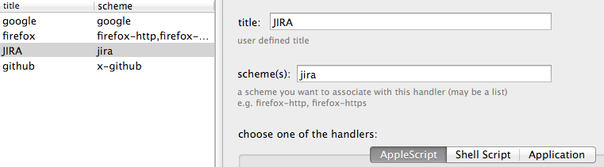

Custom URL handlers
The LinCastor’s primary job is to wait for an URL request and trigger a handler script which decides what to do next.

What is an URL ‘scheme’
Simply said, the URL scheme is the part before ‘:’ character (URL Wikipedia). So scheme of http://www.google.com is http, or foobar-my-http://a/b/c/d is foobar-my-http. The OS X is able to map a scheme to an application. Therefore there can only be one browser application handling all web links at any one time and this is where LinCastor comes useful.
Registering a scheme
- Set title to anything you like.
- Specify a scheme or list of schemes you want to handle. Adding a well known scheme such as http or ftp may ‘steal‘ it from already installed Application – you should know what you are doing here. Use characters a-z, 0-9and ‘-‘ for custom scheme name (e.g. foo-bar is ok, whereas My.Url is not).
- Choose a handler:
AppleScript
Executes handle_run method with a dictionary as argument.
on handle_url(arg)
display dialog "handle url: " & |URL| of args
end handle_url
The dictionary contains following variables:
URL => my-http://myhost.domain.com:8080/mysite/a.html?search=blah#myanchor
URL_SCHEME => my-http
URL_HOST => myhost.domain.com
URL_PORT => 8080
URL_PATH => /mysite/a.html
URL_QUERY => ?search=blah
URL_FRAGMENT => #myanchor
Only URL parts that are parseable will appear in the dictionary.
There is also special variable called URL_VALUE, it will contain anything after ‘:’ character. This is especially useful for URLs that do not comfort to the URL spec e.g. message:
URL_QUERY_SEARCH => blah
URL_QUERY_FLAG => 2
E.i. URL_QUERY_ + parameter name. Note the upper case of the parameter name.
The handler must return 1 when successful or 0 in case of an error.
Shell Script
Executes a shell script. The variable names are the same as for the AppleScript handler except that they’ll be passed to the script in form of environmental variables.
#!/bin/bash
open -a Firefox $URL
exit 0
The script must exit with value of 0 when successful or non-zero value for an error.
Application – built-in handler
The handler will pass the URL to any application you specify here. Please note that not all applications know how to open an arbitrary URL, therefore it makes the most sense to use this handler in conjunction with the remove prefix- setting. The way this works is that you register well known scheme but prefix it with your own prefix.
For example, add chrome-http and associate it with application Google Chrome. When you request an url with the chrome- prefix (e.g. chrome-http://gmail.google.com), it will be passed to the Chrome application with the prefix removed. This allows you to control which application is used to open a particular URL.